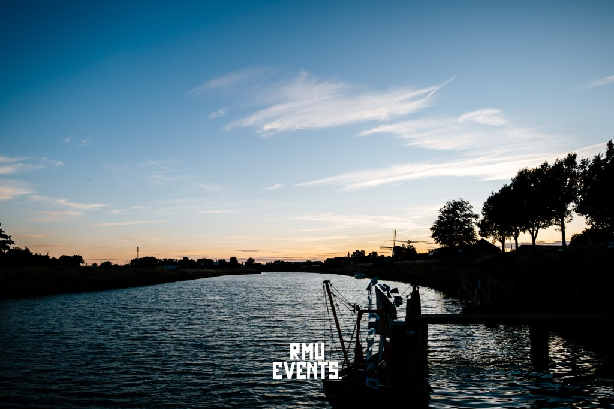

Visserijdagen
Jaarlijks organiseert stichting RMU Events Visserijdagen Arnemuiden.
Stichting RMU Events is organisator van het gehele event. Ons stadje zal weer bruisen van allerlei activiteiten en folklore. Maar veel belangrijker: overal Arnemuidse vlaggen en vlaggenlijnen door het straatbeeld en vele Arnemuidenaren in ouderwetse klederdracht of één van de moderne varianten. Geniet van de braderie, ringrijden en rondvaarten, livemuziek en nog veel meer culturele activiteiten!
Het programma van de feesttent is voor Arnemuiden en door Arnemuiden en zullen wij voor Arnemuidenaren in de brievenbus stoppen.
